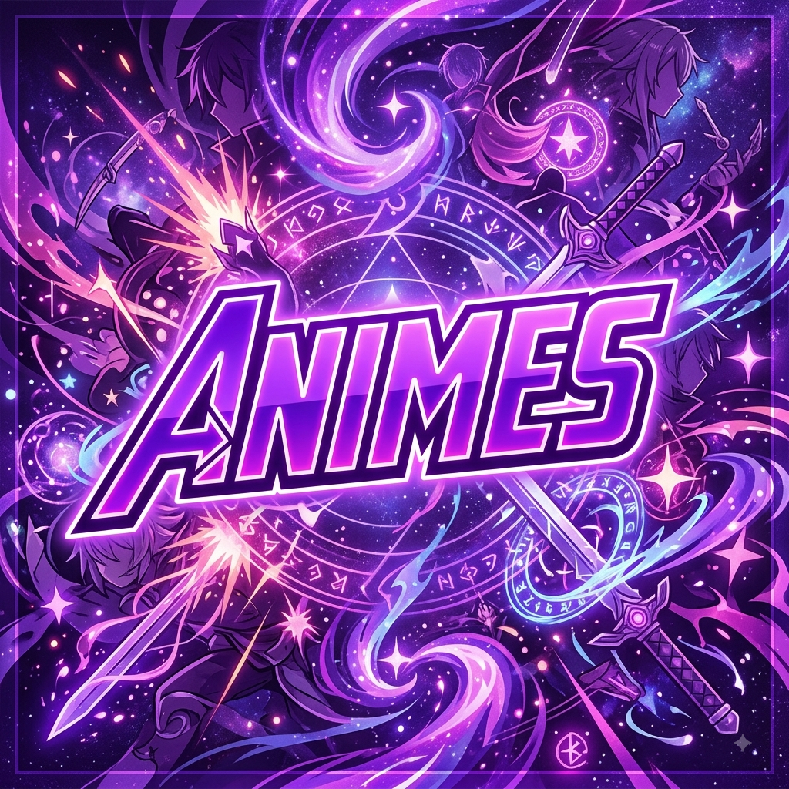
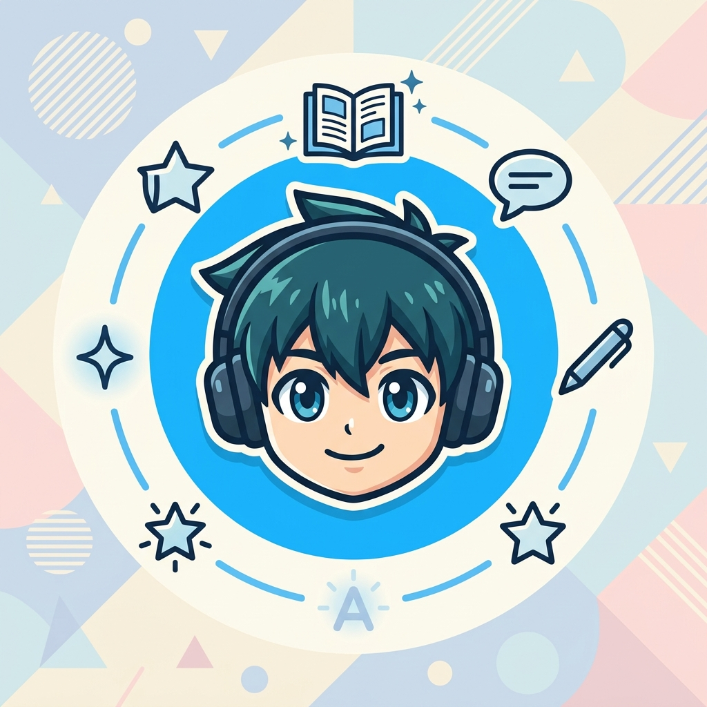
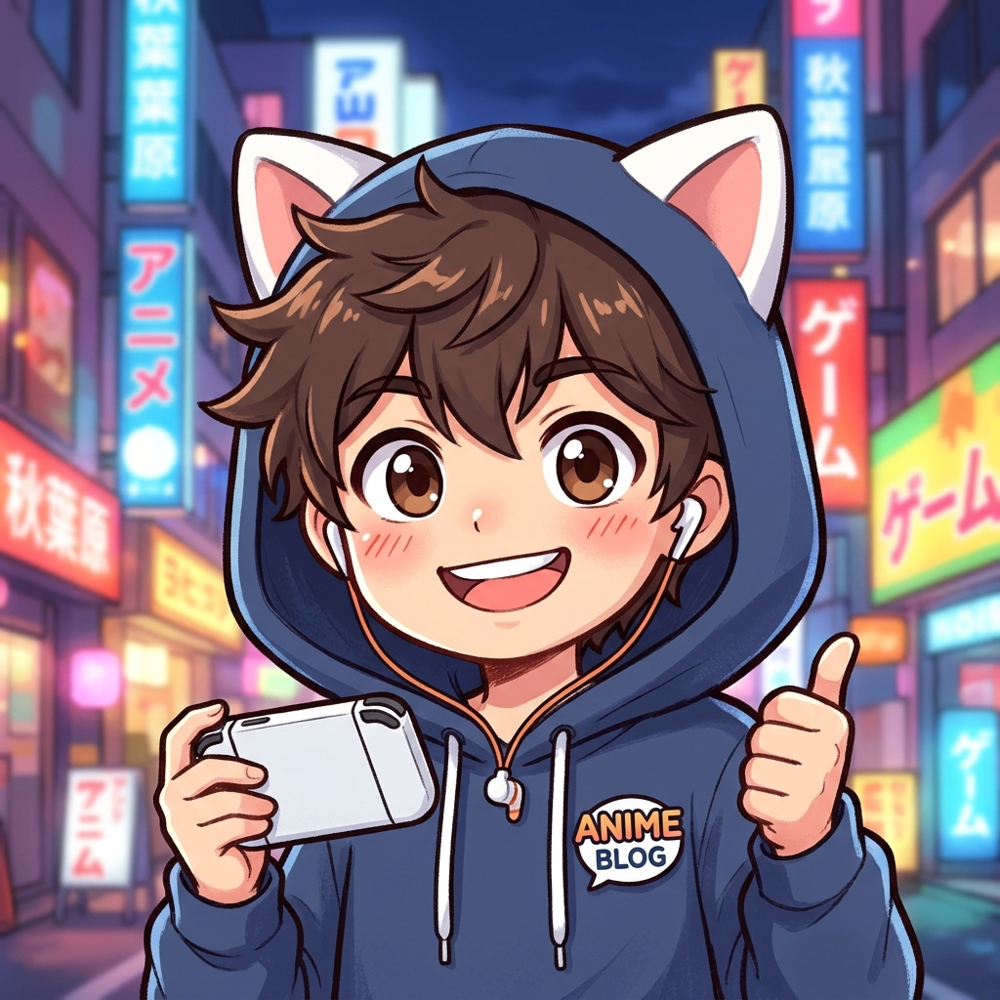
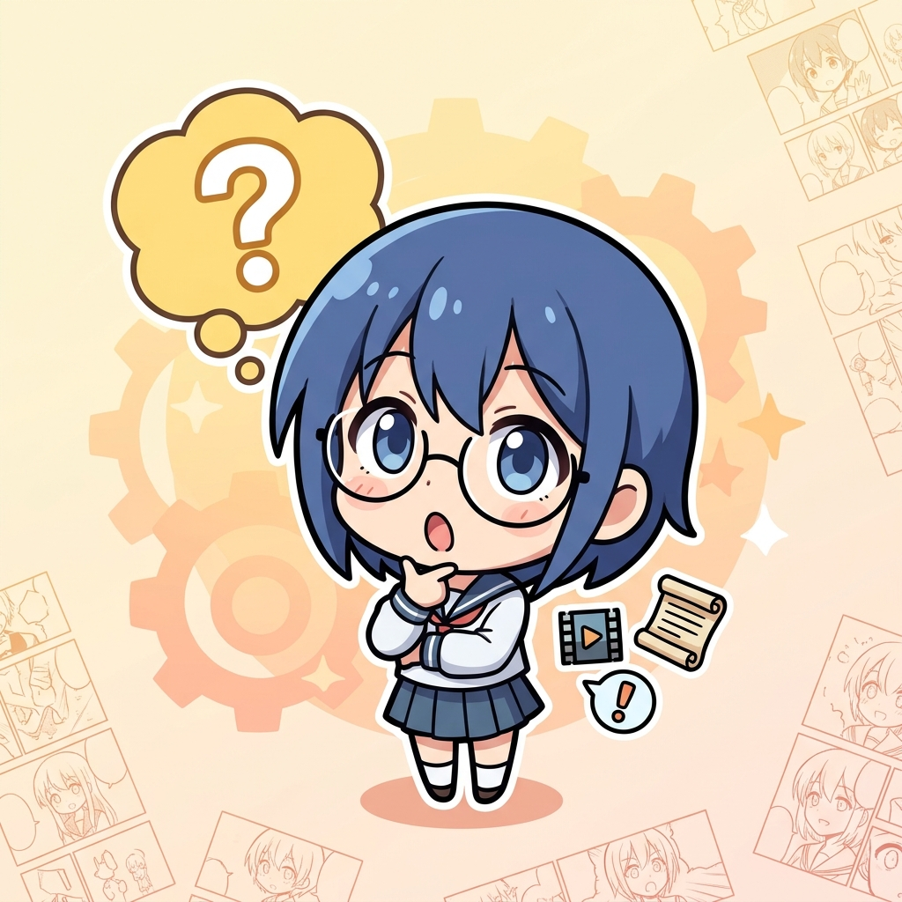

Meu primeiro post
por: Talyson Dias
Boas-Vindas ao meu novo blog! Aqui vou compartilhar curiosidades e explicações sobre animes.
Vou compartilhar conhecimentos e curiosidades sobre animes

por: Talyson Dias
Boas-Vindas ao meu novo blog! Aqui vou compartilhar curiosidades e explicações sobre animes.

Se o primeiro post foi para abrir as portas, o segundo é para cravar os pés: o universo dos animes é um caminho sem volta! ⛩️ Seja pela animação impecável, pelas lutas de tirar o fôlego ou por aquelas histórias que fazem a gente chorar igual criança, cada obra marca a nossa vida de um jeito único.

Sintoniza a tua paixão por animes: análises, recomendações e novidades do universo otaku num só lugar.

Aquela dúvida clássica de todo otaku: qual anime maratonar agora?